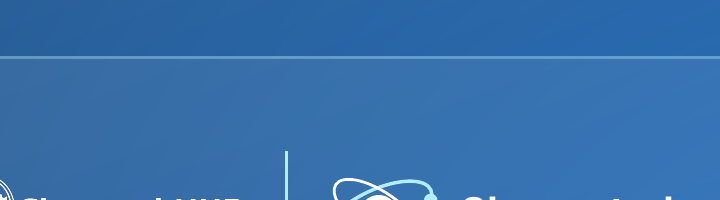

Santiago Quiñones, APC-Colombia


Datatón · Observatorio de la Tierra
Panel: territorio, cooperación y datos
Hélice triple y cuádruple · Moderador: Gideon Blaauw
Representante, Constructora Bolívar nombre por validar
Representante, RAP Pacífico nombre por validar